Payroll Process#
Melakukan Prosses Payroll#
Untuk melakukan proses awal Payroll klik tombol New 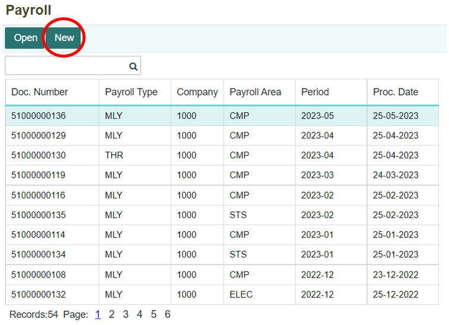
Akan ditampilkan form untuk membuat pemrosesan gaji terbaru. Isi dan lengkapi setiap kolom yang ada. Setelah itu klik Process. 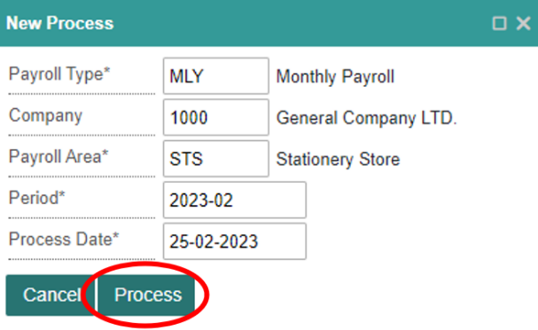
Informasi Kolom
No |
Kolom |
Keterangan |
|---|---|---|
1 |
Payrol Type |
Tipe Penggajian |
2 |
Company |
Kode Perusahaan |
3 |
Payroll Area |
Kode Area Bisnis |
4 |
Period |
Periode Penggajian (Tahun-Bulan) |
5 |
Process Date |
Tanggal Prosses Pengajian |
etelah itu akan muncul notifikasi konfirmasi untuk melanjutkan proses penggajian, klik OK untuk melanjutkan proses penggajian karyawan. 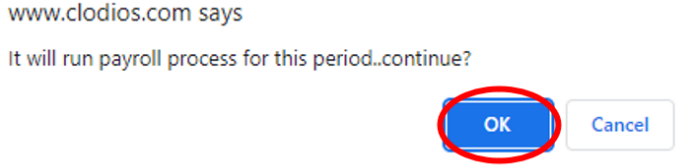
Apabila ingin membatalkan proses penggajian karyawan, klik tombol Cancel. 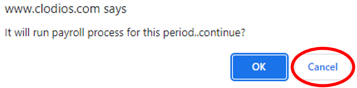
Maka data penggajian akan otomatis masuk ke daftar dokumen penggajian. Selanjutnya, untuk membuka dokumen penggajian karyawan yang baru dibuat klik Open. 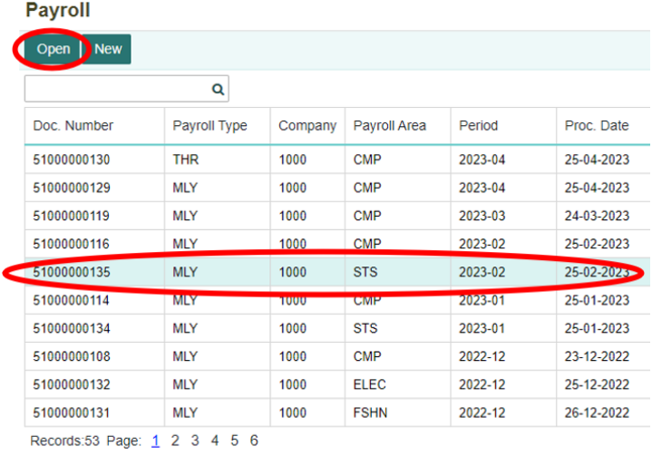
Untuk dapat melakukan pembayaran gaji karyawan, klik tombol Post Payable untuk membentuk dokumen pembayaran di menu Payable. 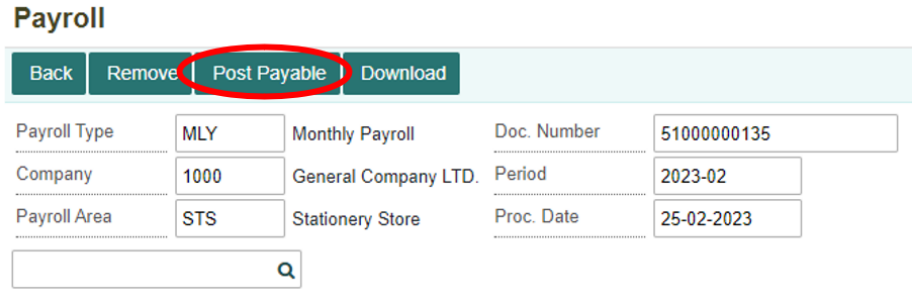
Maka akan tampil notifikasi konfirmasi untuk melakukan Post Payable, apabila tetap ingin melanjutkan klik tombol OK. 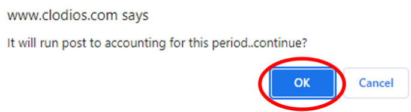
Apabila ingin membatalkan, maka klik tombol Cancel. 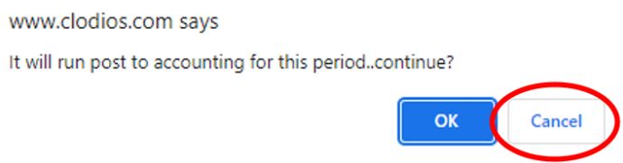
Setelah melakukan Post Payable, jurnal untuk transaksi penggajian karyawan akan terbentuk secara otomatis. Jurnal tersebut dapat dilihat di menu Journal (JNL) yang terdapat pada module Accounting. Berikut jurnal yang terbentuk. 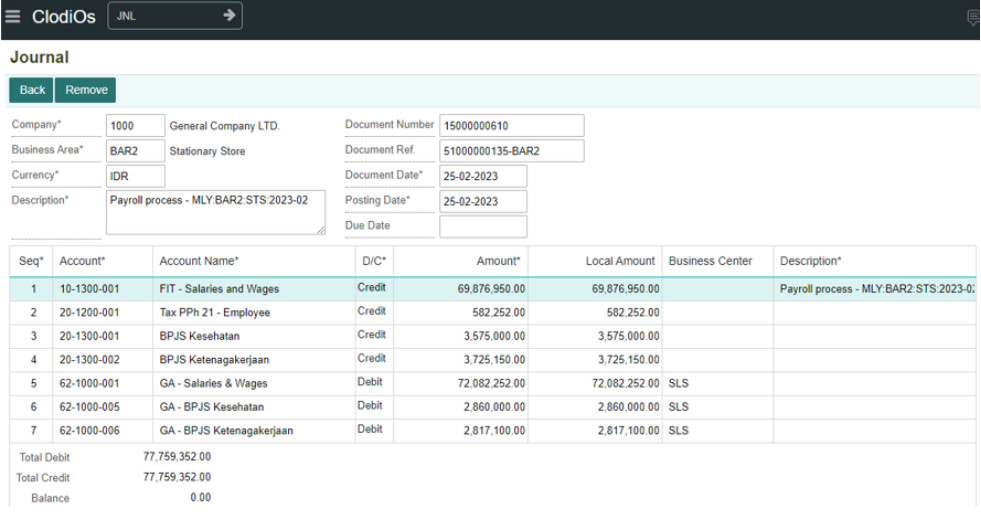
Melakukan Download Dokumen Payroll#
Apabila ingin melakukan download dokumen payroll, dapat dilakukan dengan klik tombol Download. 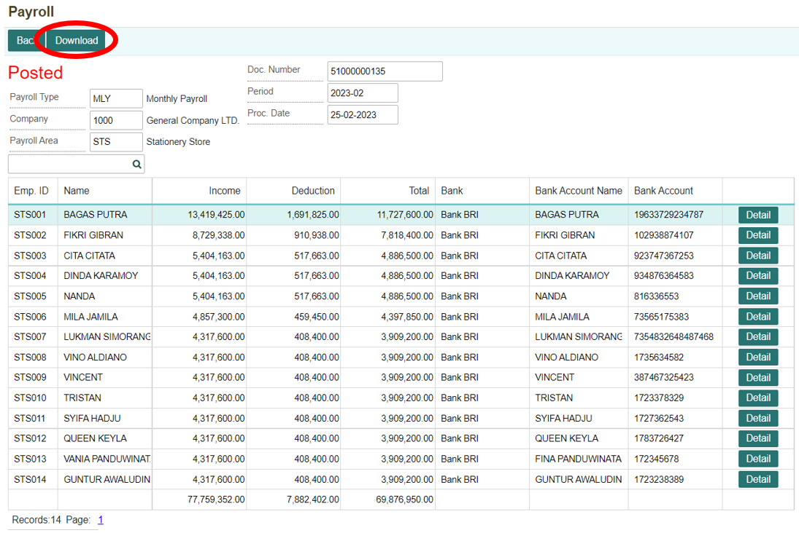
Maka data penggajian akan otomatis terunduh dalam bentuk excel, seperti berikut. 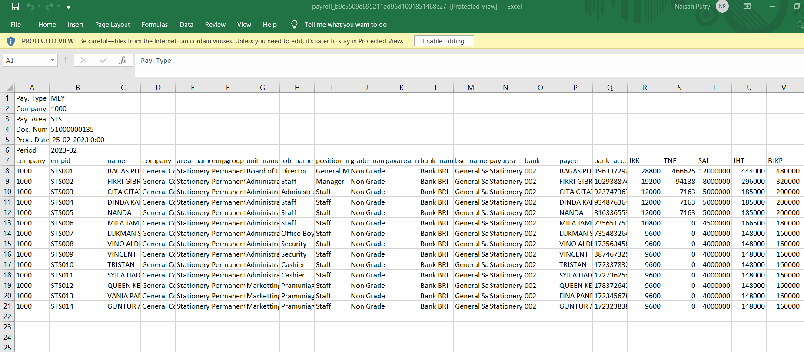